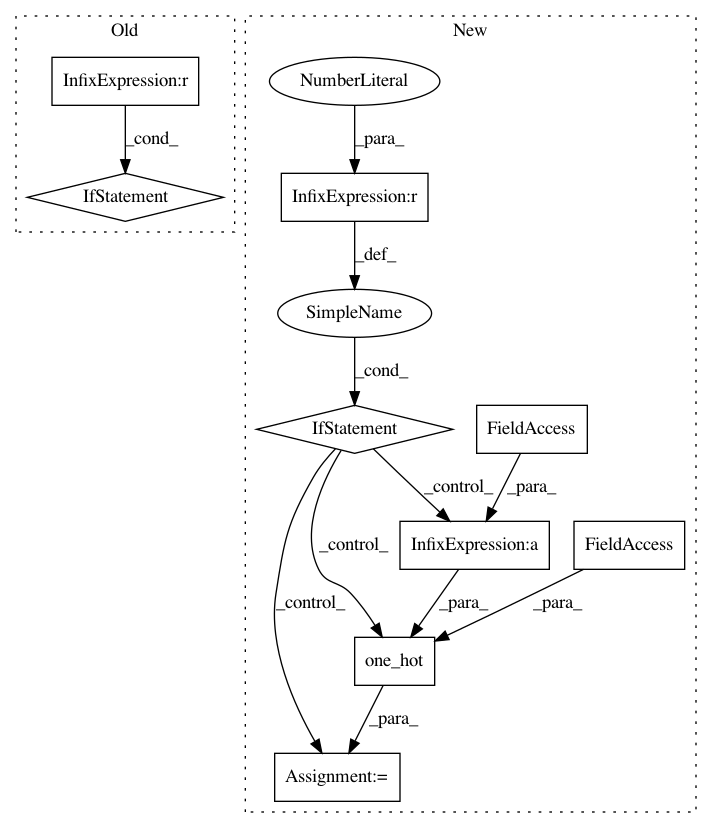

531bcb75ee8295b7229dc4244570bfca40af84ef,src/train.py,,get_symbol,#Any#Any#Any#,182
Before Change
zy = mx.sym.pick(fc7, gt_label, axis=1)
cos_t = zy/s
t = mx.sym.arccos(cos_t)
if args.margin_verbose>0:
margin_symbols.append(mx.symbol.mean(t))
if args.margin_a>0.0:
t = t*args.margin_a
if args.margin_m>0.0:
t = t+args.margin_m
After Change
_weight = mx.symbol.L2Normalization(_weight, mode="instance")
nembedding = mx.symbol.L2Normalization(embedding, mode="instance", name="fc1n")*s
fc7 = mx.sym.FullyConnected(data=nembedding, weight = _weight, no_bias = True, num_hidden=args.num_classes, name="fc7")
if args.margin_a!=1.0 or args.margin_m!=0.0 or args.margin_b!=0.0:
if args.margin_a==1.0 and args.margin_m==0.0:
s_m = s*args.margin_b
gt_one_hot = mx.sym.one_hot(gt_label, depth = args.num_classes, on_value = s_m, off_value = 0.0)
fc7 = fc7-gt_one_hot
else:
zy = mx.sym.pick(fc7, gt_label, axis=1)
cos_t = zy/s
t = mx.sym.arccos(cos_t)
if args.margin_a!=1.0:
t = t*args.margin_a
if args.margin_m>0.0:
t = t+args.margin_m
body = mx.sym.cos(t)
if args.margin_b>0.0:
body = body - args.margin_b
new_zy = body*s
diff = new_zy - zy
diff = mx.sym.expand_dims(diff, 1)
gt_one_hot = mx.sym.one_hot(gt_label, depth = args.num_classes, on_value = 1.0, off_value = 0.0)
body = mx.sym.broadcast_mul(gt_one_hot, diff)
fc7 = fc7+body
elif args.loss_type==6:
s = args.margin_s
m = args.margin_m
assert s>0.0
In pattern: SUPERPATTERN
Frequency: 3
Non-data size: 9
Instances
Project Name: deepinsight/insightface
Commit Name: 531bcb75ee8295b7229dc4244570bfca40af84ef
Time: 2018-08-17
Author: guojia@gmail.com
File Name: src/train.py
Class Name:
Method Name: get_symbol
Project Name: deepinsight/insightface
Commit Name: ec9aa4d6de1017374665cfc69b35bcda012bc7b7
Time: 2018-08-17
Author: guojia@gmail.com
File Name: src/train.py
Class Name:
Method Name: get_symbol
Project Name: pyprob/pyprob
Commit Name: d8f8ac953bc290739aa32a0ad277d53820d4473a
Time: 2017-08-05
Author: atilimgunes.baydin@gmail.com
File Name: pyprob/comm.py
Class Name:
Method Name: get_sample